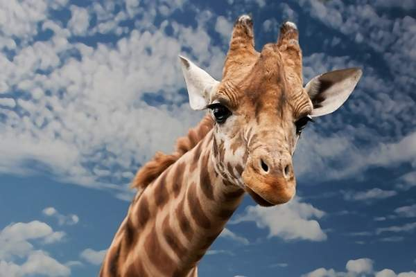

Terrestre
La jirafa es el animal terrestre más alto del mundo y uno de los protagonistas indiscutibles de la sabana africana. Esta peculiar especie puede llegar a medir 5 metros de altura y su nombre en latín Giraffa camelopardalis proviene de los romanos, que las consideraban una mezcla de camello y leopardo. Este animal, junto con el okapi, forman las dos únicas especies actuales de la familia Giraffidae.
¿Cuantos años vive?
Viven aproximadamente 20 y 25 años
Metros de largo
Pueden medir de 5 y 6 metros de alto/p>
Peso
Entre 550-1.200 kg
Hábitat
Se encuentran en todo tipo de ambientes de sabana, si bien prefieren áreas ricas en acacias,
los machos suelen aventurarse en el interior de densas arboledas en busca de más follaje.
Debido a que sólo beben ocasionalmente, las jirafas pueden encontrarse lejos de fuentes de agua.
Peligro de extinción
La jirafa ha sido un animal cazado y perseguido a lo largo de la historia.
De él se extraía carne, piel y otras partes de su cuerpo que se utilizaban para elaborar ciertos productos como collares, carteras, zapatos o adornos.
El estado actual de la jirafa está catalogado como vulnerable por la Unión Internacional de Conservación de la Naturaleza (UICN). La deforestación, con la consiguiente reducción de su hábitat natural, al igual que la caza, son las principales amenazas a las que se enfrentan.
A pesar de que es un animal generalmente protegido, sigue siendo objeto de caza y persecución. De hecho, las subespecies de Giraffa camelopardalis rothschildi y la Giraffa camelopardalis peralta se encuentran en grave peligro de extinción, con muy pocos ejemplares en estado salvaje. Para defender a este animal, la especie cuenta con su propio Día Mundial de la Jirafa.
En Oasys MiniHollywood contamos con un ejemplar de Giraffa camelopardalis y estamos a la espera de la llegada de una hembra para que puedan formar un grupo de cría. ¡Venga a la reserva zoológica para conocer de cerca a este majestuoso animal!